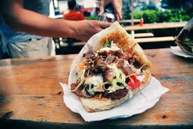

Döner Kebab
Home

The ingredients
Steps
- Preheat the oven to 400 degrees F (200 degrees C).
- Combine ground beef, ground lamb,
onion, 3 tablespoons yogurt, olive oil, paprika,
cumin, coriander, oregano, salt, and
pepper in a bowl. Mix until very well combined and smooth.
- Divide meat mixture among
4 rectangular sheets of parchment paper. Place a
piece of parchment on top of the meat and use a rolling
pin to spread it all the way to the edges in a very thin layer
covering the sheet of
parchment paper. Remove the top sheet.
- Starting at the shorter end of the paper,
fold the meat covered parchment, several times in
about 1 1/2-inch folds.
Place folded filled parchment on a rimmed baking sheet.
- Bake in the preheated oven for 30 to
35 minutes, draining off some of the accumulated
fat and juices halfway through.
- Unravel meat from the paper and return to the baking sheet.
If you prefer more browning, return unfolded meat to the oven
for 5 to 10 minutes longer.
Sprinkle with 1 to 2 tablespoons lemon juice.
- Meanwhile, combine remaining yogurt and lemon juice in a small bowl.
Stir in garlic; season with salt.
Add 1 or 2 tablespoons water if sauce seems too thick.
- Tear meat into large pieces and serve on warm pita with parsley leaves,
sliced onion, and tomato.
Drizzle with yogurt sauce and hot sauce.
- Enjoy!